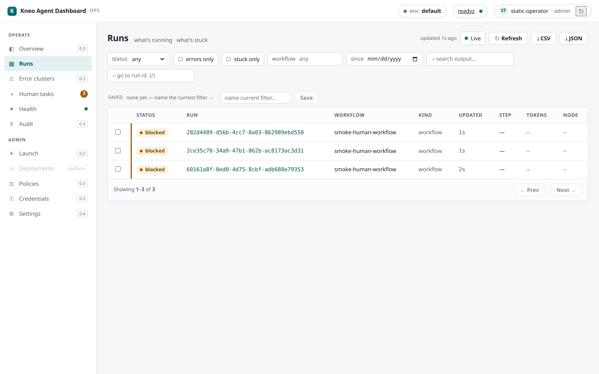

Runs & debugging¶
The core monitoring loop: find runs, drill in, follow their execution, steer them — and get data out for hand-off. This is where an operator spends most of their day.

Overview¶
The landing page — the at-a-glance answer to what's running · what needs attention · is
production healthy. Tiles (running · blocked · failed · pending human tasks · total) are
derived from the platform on a light refresh; each drills into the matching filtered
surface. A readiness pill mirrors platform health, and — when KNEO_DASH_GRAFANA_URL is set —
a Grafana deep-link covers real time-series (the tiles are lightweight counts, not a
metrics store).
Two summary lines sit beside the tiles:
- Error rate —
failed / totalover the counted runs, rendered only when it's computable (hidden when the total is0or unknown). A quick "how healthy is this env?" glance, not a windowed SLO. - Spend (7d) — the approximate 7-day blended cost for the active environment. Shows
—until a price book is set, and flags a window-truncated figure as a lower bound. See Cost & spend.
Error clusters¶
"What's failing, across runs?" The Operate → Errors page (/errors) answers the
cross-run triage question the per-run view can't: it fetches a recent window of status=failed
runs and groups them by workflow, most-failing first (GET /api/runs/error-summary →
ErrorSummaryView).
Each group shows the workflow (kind + name), the failure count in the window, and a
few sample run ids to jump straight into. total_failed and scanned frame the window —
like the other aggregations here it scans a recent budget of runs, not all history (the
"not a metrics store" caveat), so a very old failure may fall outside it.
Worked example. Three runs of orders.refund and one of billing.sync failed in the
window → the page shows a refund group with count: 3 (three sample ids) above a sync
group with count: 1. Click a sample id to open that run's detail; use the workflow name to
narrow the Runs list to everything failing in that workflow.
Runs list¶
"What's running · what's stuck." Auto-refreshes on a light interval (pause it with the Live toggle when you're reading a stable snapshot).
Filtering¶
- status · errors-only · stuck-only (a BFF heuristic:
runningwith a staleupdated_at, orblockednear a deadline) · workflow kind · created-since · content search (q, over run output). - Facets a below-floor kneo-serv doesn't support are disabled, not silently dropped (the
platform compatibility floors):
qneeds serv ≥ 1.2.0;has_error/workflow_kind/created-since need ≥ 1.1.0. - Go to run id — jump straight to a run by id (press
/to focus the box).
Worked example — triage the last hour's failures. Set errors-only + created-since
= 1h, and (on serv ≥ 1.2.0) type an error fragment in q. You now have every failed run
in the window mentioning that text; sort/scan, then click into one, or Export the view
(below) to hand it to whoever owns the workflow.
Saved filters¶
Name the current filter set and re-apply it in one click — stored in the dashboard state
store and shared across operators (an org-shared triage vocabulary). Writing one needs the
filter.write capability (operator/admin in the built-in default map).
- Create — name the active filter; it appears in the saved list.
- Apply — one click re-runs the Runs list with that filter.
- Update / rename — editing a saved filter carries its version; if someone else
changed it since you loaded the list, the write is refused
409"changed since you read it — refresh" (optimistic concurrency) rather than silently clobbering their edit. - Delete — likewise version-guarded (a stale delete is
409, a missing one404).
Export (CSV / JSON)¶
Export the current filtered view for an incident hand-off or compliance extract — the Export CSV / Export JSON buttons. Key properties:
- Bounded. It pages the same Runs endpoint up to ~1000 rows (20 × 50); when the window is larger you get a truncation note, so an extract never silently claims to be all history.
- Client-composed, no special permission. Export is built in the browser from reads you can already make — there is deliberately no export capability or server endpoint (ADR-009); anyone who can see the runs can save them.
- Spreadsheet-safe CSV. Cells that could be read as a formula (leading
= + - @) are neutralized, and commas/quotes/newlines are quoted — so a crafted workflow name can't execute in Excel/Sheets. - A
401mid-export routes you to re-login; any other failure surfaces a note with the request id (see troubleshooting).
Bulk Stop¶
Select rows (per-row checkboxes or select-all) and Stop selected to cancel several runs at
once (needs run.control). The Dashboard fans out one idempotent cancel per run, each
independent — an already-terminal run is a 200 no-op and a conflict on one run doesn't sink
the batch; a results banner summarizes N stopped / M failed, grouped by reason.
Run detail¶
Open a run for its tabs:
- Overview — status, agent, current node/step, continuation + session id (links to the session view), tokens, error.
- Trace — the event waterfall (paged), with a Live tail toggle that streams new events over SSE while the run is active.
- Checkpoints — the checkpoint timeline + a time-travel diff between any two sequences (added / changed / removed state).
- Graph — the workflow DAG (visited/current highlighted); falls back to a path breadcrumb on older servers.
- Chain — sibling runs sharing this run's session (walk pause→resume); vs ⇄ compares a sibling with the current run (compare).
- Recover — where a failed/interrupted run stopped + the replay timeline; offers Resume when recoverable.
- Policy — the compiled spec's policy outcomes for this run (human-review requirements, diagnostics). See Policies.
- Notes — operator annotations + tags for the run (see below).
Run control¶
Stop (cancel, cooperative) shows on any non-terminal run; Resume (continue) shows
on a blocked run. Both need run.control. Each action is idempotent (a per-attempt key), and
the view polls until the run reaches a terminal state, so the buttons hide once it's done.
Stopping an already-terminal run is a 200 no-op, not an error (see the
compatibility notes / the API
contract).
Notes & annotations¶
The Notes tab attaches operator annotations — a free-text body + tags — to a run
(dashboard-local; needs annotate). Each note is stamped with the authoring operator and
carries a version:
- Add a note (body + optional tags) to the run.
- Edit / delete carry the note's version, so a concurrent edit by another operator is
refused
409"changed since you read it — refresh" (optimistic concurrency) rather than one write silently clobbering the other. - Notes are org-shared and stamped with the real operator identity; a successful note write is not in the audit log (only capability denials are — see the audit contract).
Export a run bundle¶
The run detail's Export bundle button downloads a single JSON bundle — the run detail (status / trace / checkpoints / …) plus that run's recent audit events — for attaching to an incident ticket or sharing a picture of one run. Composed client-side from reads you can already make; the audit slice is a recent page (not a full deep-history export).
Sessions¶
A session groups the runs of one thread across pause→resume boundaries. Reach it from a run's
Session id — /sessions/:id lists that session's runs oldest-first (needs serv ≥ 1.1.0 to
filter by session; older servers show the chain as unavailable).
Comparing two runs¶
From the Chain tab's vs ⇄ link (or /compare?a=&b=), see two runs side-by-side — status,
workflow, node/step, path/trace/checkpoint counts, tokens, error — to spot what changed between
an original run and its continuation.
Worked example. A run blocked, was resumed, and the continuation still failed. Open the
continuation → Chain → vs ⇄ against the original: the diff shows the continuation
advanced two nodes further before erroring, narrowing where to look.
Launching a spec¶
Under Admin → Launch, operate a Studio-produced spec in three phases: Load (static
preview) → Deploy (validate + compile + policy-report against the target env → ready?) →
Run (start a real run). Run is a platform-authoritative mutation gated by a typed
confirm (re-type the environment name) and the launch capability; editing the spec/env
re-arms the gate. Recent launches are kept as a reference-only MRU (spec_path · label ·
digest — never the inline spec) for one-click re-launch.
Related¶
- Human-in-the-loop — deciding a
blockedrun's task. - Audit & health — the platform audit timeline + health.
- Cost & spend — the Overview Spend line + the price book.
- Connecting › compatibility — which filters need which serv.
- Troubleshooting —
409conflicts, SSE not streaming, and using the request id.